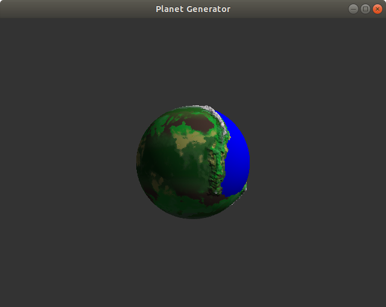
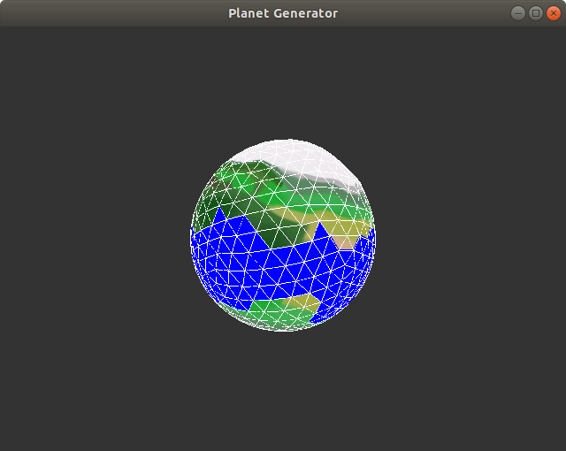
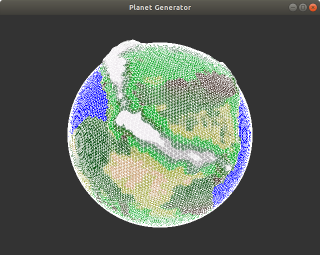
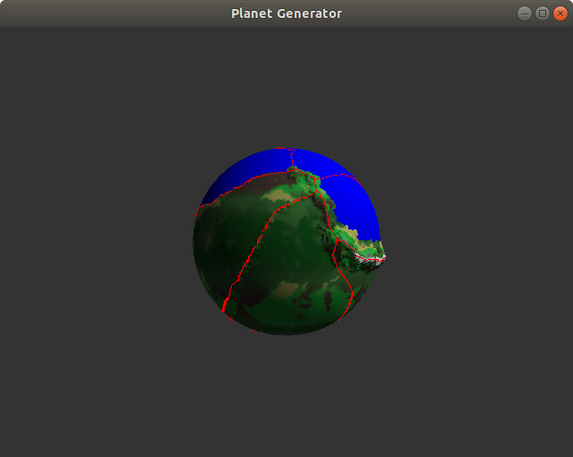
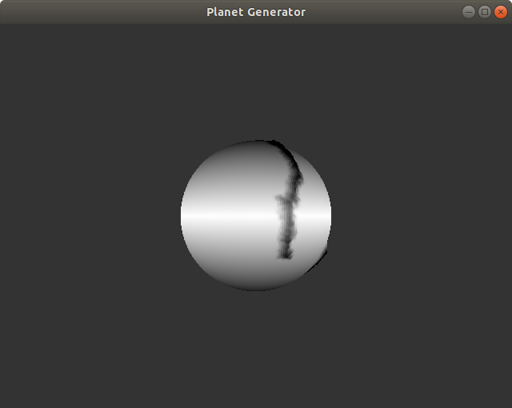

Menulib
C++, OpenGL, GLFW, Eigen3, SOIL, Surface_Mesh
With William Daigremont, Robin Montfermé, Léo Souvay, Théo Videau
Report ( french )
PDF File
What is it ?
Procedural planet generator is a university project in which we generate a low poly planet with procedural algorithms. This includes biomes, oceans and mountains and uses various concepts such as Perlin Noises, Uniform repartition of points on a sphere, texturing or seeding.
I mainly worked on the tectonic plates and mountains.
Final result

A planet generated with our tool
Different icosahedron subdivision


Spheres generated with an icosahedron divided 3 times or 6 times
Tectonic plates, mountains and temperature


Tectonic plates and temperature